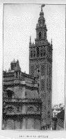
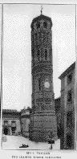

|
| A B C D E F G H I J K L M N O P Q R S T U V W X Y Z |
The subject will be treated under the following heads:
I. Origin;
II. Benediction;
III. Uses;
IV. Archaeology and Inscriptions;
V. Points of Law.
That bells, at any rate hand-bells of relatively small size, were familiar to all the chief nations of antiquity is a fact beyond dispute. The archaeological evidence for this conclusion has been collected in the monograph of Abbé Morillot and is quite overwhelming. Specimens are still preserved of the bells used in ancient Babylonia and in Egypt, as well as by the Romans and Greeks, while the bell undoubtedly figured no less prominently in such independent civilizations as those of China and Hindustan. There is consequently no reason why the bells upon the high priest's ephod (Exodus 33:33) should not have been tiny bells of normal shape. Further it may be inferred from the purposes for which they were used that the tintinnabula of which we read in the classics, must at least in some instances have betokened hand-bells of larger size. See for example Martial, "Epig.", xiv, 161, where the signal for the opening of the baths is made with a tintinnabulum also described as œs thermarum. None the less, the question whether anything corresponding in size to a church bell was known in pre-Christian times does not readily admit of an answer. We are not only ignorant of the dimensions, but also of the shape of the kodon which was used for example to announce the opening of the public markets (Cf. Strabo, Geogr., IV, xxi). We translate the word as bell, but it is possible that it would be more correctly rendered gong or cymbals. The officer who made the round of the sentries at night carried a (Thucyd., IV, cxxxv; Aristoph., Aves, 842 sqq.), and it is difficult to believe that anything resembling an ordinary bell could have been used for a duty in which the avoidance of accidental noise must often have been of the highest importance.
In coming to the Christian period the same difficulty is encountered. A new set of terms is introduced, signum, campana, clocca, nola, which are all commonly translated "bell", and it is certain that at a later period these were all used to denote what were in the strictest sense "church bells" of large size. The first Christian writer who frequently speaks of bells (signa) is Gregory of Tours (c. 585). We learn that they were struck or shaken, and we find mention of a cord being used for this purpose (funem illum de quo signum commovetur, "De Vitâ Martini", I, xxviii), while as regards the use of these signa it appears that they rung before church services and that they roused the monks from their beds. Again, the word signum appears in the almost contemporary "Life of St. Columban" (615), for when one of his monks was dying Columban is said to have assembled the community by ringing the bell (signo tacto omnes adesse imperavit), Krusch, "Scrip. Merov.", IV, 85). Similar expressions, signo tacto, or cum exauditum fuerit signum, are used in Constitutions attributed to St. Caesarius of Arles (c. 513) and in the Rule of St. Benedict (c. 540). Moreover, if Dom Ferotin's view of the very early date of the Spanish ordinals which he has published (Monumenta Liturgica, V) could be safely accepted, it is possible that large bells were in common use in Spain at the same period. Still it must be remembered that signum primarily meant a signal and we must not be too hasty in attributing to it a specific instead of a generic meaning when first employed by Merovingian writers.
Again, the word campana, which even in the early Middle Ages undoubtedly meant a church bell and nothing else, occurs first, if Reifferscheid's "Anecdota Cassinensia" (p. 6) may be trusted, in Southern Italy (c. 515) in a letter to the deacon Ferrandus to Abbot Eugippius. It has been suggested from a Latin inscription connected with Arval Brethren (C.I., L. VI, no. 2067) that it was previously used to mean some kind of brazen vessel. However, no quite satisfactory examples of campana in church Latin seem to be forthcoming before that latter part of the seventh century, and it is then found in the North. It is used by Cummian at Iona (c. 665) and by Bede in Northumbria (c. 710), and frequently elsewhere after that date. In Rome, the "Liber Pontificalis" tells us that Pope Stephen II (752-757) erected a belfry with three bells (campanae) at St. Peter's. It was probably this name which led Walafrid Strabo in the first half of the ninth century to make the assertion that bells were of Italian origin and that they came from Campania and more particularly from the town of Nola. Later writers went further and attributed the invention to St. Paulinus of Nola, but as St. Paulinus himself in the minute description which he has left of his own church makes no mention of bells, this is extremely improbable.
The word clocca (Fr. cloche; Ger. Glocke; Eng. clock) is interesting because in this case it is definitely known what was meant by it. It was certainly Irish in origin and it occurs at an early date both in Latin and in the Irish form clog. Thus it is found in Book of Armagh and is used by Adamnan in his life of St. Columbkill written c. 685. The Irish and English missionaries no doubt imported it into Germany where it appears more than once in the Sacramentary of Gellone. It is plain that in primitive Celtic lands an extraordinary importance was attached to bells. A very large number of these ancient bells, more than sixty in all — the immense majority being Irish — are still in existence. Many of them are reputed to have belonged to Irish saints and partake of the character of relics. The most famous is that of St. Patrick, the clog-an-edachta, or "bell-off-the-will" now preserved in the Museum of the Royal Irish Academy, Dublin. There seems no serious reason to doubt that this was taken from the tomb in the year 552. Like most of these bells, it had an official and hereditary custodian (in this case named Mulholland) in whose possession it remained, being handed down for centuries from father to son. Other similar early bells are those of St. Senan (c. 540) and St. Mura; there are several in Scotland and Wales, one at St. Gall in Switzerland, one known as the Saufang at Colonge, and another at Noyon in France. The evidence for the extraordinary veneration with which these bells were regarded in Celtic lands is overwhelming. Even Giraldus Cambrensis notes in the twelfth century that upon them was taken the most solemn form of oath. They were also carried into battle, and even though the earlier specimens are nothing but rude cow-bells, wedge-shape in form and made of iron plate bent and roughly riveted, still they were often enclosed at a later daye in cases or "shrines" of the richest workmanship. The shrine of St. Patrick's bell bears an inscription of some length from which we learn that this beautiful specimen of the jeweler's craft must have been wrought about 1005. History tends to repeat itself, and if we remember the important part played in the missionary work of St. Francis Xavier by the handbell with which he gathered round him the children, the idle, or the curious, we have probably a clue to the intimate association of these very early Celtic bells with the work of Christianity. When in 1683 Father Maunoir, the great Breton missionary, had at last to relinquish further expeditions, the bell which he handed on to his successor was regarded as a sort of investiture. It may be noted that the famous round towers of Ireland, which are now generally recognized to have been places of refuge against the inroads of the Danes and other marauders were commonly called cloc teach. The bells occasionally stored there for the sake of safety seem to have been regarded as the most precious of their treasures and from this circumstance the towers probably derived their name, though it is of course possible that they in some cases served as belfries in the more ordinary sense.
The great development in the use of bells may be identified with the eighth century. It was then, seemingly, that they began to be regarded as an essential part of the equipment of every church, and also that the practice of blessing them by a special form of consecration became generally prevalent. If we interpreted literally a well-known passage in Bede (Hist. Eccl.., IV, xxi), we should have to believe that already in the year 680, the bell (campana) that was rung at Whitby at the passing away of St. Hilda was heard at Hackness thirteen miles off. But the whole setting of the story implies that Bede regarded the occurrence as miraculous and that the distance might as well as have been thirty miles as thirteen. On the other hand, it is clear that in the eighth century church towers began to be built for the express purpose of hanging bells in them, which implies that the bells must have been increasing in size. The case of St. Peter's in Rome has already been noticed. So in the annals of St. Vandrille (cap. x, p. 33) we read that in the time of Ermharius who died in 738 that abbot had a bell made, to be hung in the little tower (turricula) "as is the custom of such churches"; while the "Monachus Sangallensis" (DeCarlo Magno, I, xxxi) tells the story of a monastic bell-founder who asked Charlemagne to give him a hundred pounds of silver with a proportionate amount of cooper to provide materials for a single bell. In any case it is certain from Charlemagne's "Capitularies", as well as from Alcuin, Amalarius, and other writers of the early ninth century that by that time in the Frankish dominions every parish church was expected to have one bell. In the next century Regino of Prüm, providing a programme of questions to be asked at an episcopal visitation, puts in the very first place a question about the church bells. Seeing that the clearest evidence of the popularity of church bells in Carlovingian times is encountered in regions where the influence of Irish or English missionaries had prevailed, it may perhaps be concluded that this development should be traced to Celtic influence. The missionary's hand-bell, with which he gathered his congregation together in the open air, would soon become sacred as a thing immediately associated with him and his work. Moreover, the idea would grow up that no religious service could take place without some preliminary ringing of a bell. Although we have traces of the use of signa and companae in monasteries before the Irish became missionaries, there is no evidence to show that these were bells rather than gongs. On the other hand, semantron, used to announce the beginning of service in Greek monasteries, was a flat plate of metal and its name (from semainein, "to make a signal") is obviously the counterpart of signum. Further we also find in the old glossary of the tenth century that the Greek word tympanon (drum) is given as the equivalent of campanum (Corpus Glossariorum Latinorum. III, 24). At the same time, we can trace in Ireland itself a gradual evolution of the shape of the bell, passing from the small cow-bell of riveted iron to the cast bronze instrument of considerable size with which we are now familiar.
 Since the beginning of the sixteenth century there has been much purposeless controversy over the question of the so-called "baptism" of the bells. Protestant critics, following the lead of Luther himself, have professed to find in the rite not only superstition but a profanation of the sacrament. But one might as well be scandalized at the ceremonial usually followed in the launching and christening of a ship. The phrase "baptism of bells" is merely popular and metaphorical. It has been tolerated, but has never been formally recognized by the Church. (Benedict, XIV, Instit., 47, n. 33). Every Catholic child is aware that the essence of the Sacrament of Baptism consists in the form: "I baptize thee", etc., but no properly authorized ritual for the blessing of the bells is known to have contained any phrase which can be regarded as an equivalent or parody of these words. Certain local "agenda" in which something of the sort is found, for example in Colonge (see Schönfelder, Liturgishe Bibliothek, I, 99-100) appear never to have received any official recognition (cf. The Month, September 1907). On the other hand, the ceremonial of the Church is often imitative. The rite for the blessing of palms closely follows the arrangement of the variable portions of the Mass. The order for the coronation of a king copies that so nearly for the consecration of a bishop that Anglican writers recently contended the king is a "spiritual person" invested with episcopal powers. Hence it would not be surprising that in the "Benedictio Signi vel Compan a certain resemblance should be traced to details in the ritual of baptism. Exorcisms are used, and water and salt and unctions with the holy oils; the bell receives a name, and formerly, at least, the name was suggested by a "godfather". But for all the controversy the resemblances are really very superficial. The following is a summary of the ceremony now in use from which the medieval pontificals differ but slightly. The bishop in white vestments first recites seven psalms with his attendant clergy to implore the Divine assistance. The he mixes salt with water, reciting prayers of exorcism analogous to those always used in the preparation of holy water, but making special reference to the bell and to the evil influences of the air--the phantoms, the storms, the lightning--which threaten the peace of devout Christians who come to the church to sing the praises of God. Then the bishop and his attendants "wash" (lavant) the bell inside and out with the water thus prepared and dry it with towels, the psalm "Laudate Dominum de coelis" and five others of similar import being sung meanwhile. These are followed by various unctions, those on the outside of the bell being made with the oil of the sick in seven places, and those on the inside with chrism in four places. In the accompanying prayers mention is made of the silver trumpets of the Old Law and of the fall of the walls of Jericho, while protection is asked once more against the powers of the air, and the faithful are encouraged to take refuge under the sign of the Holy Cross. In this respect the prologue of Longfellow's "Golden Legend" leaves a generally correct impression, despite the inaccurate statement:
For those bells have been anointed
And baptized with holy water.
In making the unctions, and not, be it noticed, in washing the bell, a form is used introducing the patron saint: "May this bell be + hallowed, O Lord, and + consecrated in the name of the + Father, and of the + Son and of the + Holy Ghost. In honour of St. N. Peace be to thee." Finally, the thurible with incense (thymiama) and myrrh are placed under the bell so that the smoke arising may fill its cavity. Then another prayer is said of similar purport to the last, and the ceremony ends with the reading of the passage in the Gospel concerning Martha and Mary.
 In all essentials this ritual agrees with that in use in Carlovingian times, found in many manuscripts and dating probably as far back as the pontificate of Egbert of York in the middle of the eighth century. The washing and the unctions were prescribed as at present, but of old we find no trace of the form of words or of the name-giving which now accompany the unctions. That the ritual for the blessing of bells, which has thus been in use in the Church for nearly twelve hundred years, was framed with any design of imitating the ceremonies of baptism seems highly improbable for many reasons. First there is no triple immersion, nor strictly speaking any pouring of water. The bell is "washed" by the bishop and his assistants, just as the altars are washed on Maundy Thursday. Further there is nothing whatever to recall the ephpheta ceremony, yet this is the one detail in the rite of baptism, which would seem in place if the ritual were transferred to a bell. Against the argument used by the Reformers that Charlemagne in his capitularies decreed ut cloccas non baptizent, it might be urged as a quite natural explanation of this ordinance that some practice may have begun to grow up which seemed too closely to parody the rite of baptism and that the prevalence of our existing less objectionable ceremonial was precisely the result of Charlemagne's intervention. It is possible that a rubric found in one or two, but no more of the extant pontificals "Tunc sub trin infusione aqu sanct impone ei [i.e. campan ] nomen, si velis", preserves the trace of the practice which Charlemagne condemns. Certain Spanish ordinals, the original of which must date from the seventh century or earlier, contain a quite different rite for the blessing of bells (Ferotin, onumenta Liturgica, V 160). Here there is no mention of unctions or of any washing with holy water, but there are exorcisms and prayers of the same general purport as those found in the Roman Pontifical. Indirectly this Spanish ritual, by speaking of "hoc vas concretum generibus metallorum", proves that from an early date a combination of metals was used in founding bells.
The first ecclesiastical use of bells was to announce the hour of church services. It is plain that in the days before watches and clocks some such signal must have been a necessity, more especially in religious communities which assembled many times a day to sing the Divine praises. Among the Egyptian cenobites we read that a trumpet used for this purpose ; among the Greeks a wooden board or sheet of metal was struck with a hammer; in the West the use of bells eventually prevailed. In the Merovingian period there is no trustworthy evidence for the existence of large bells capable of being heard at a distance, but, as it became needful to call to church the inhabitants of a town or hamlet, bell turrets were built, and bells increased in size, and as early as the eighth century we hear of two or more bells in the same church. Perhaps these were at first intended to reinforce each other and add to the volume of sound. But, in any case it became in time a recognized principle that the classicum, the clash of several bells ringing at once, constituted an element of joy and solemnity befitting great feasts (Rupert of Deutz, De Div. Oofic., I, 16). Medieval consuetudinaries show that where there were many bell, different bells were used for different purposes. Even in ordinary parish churches it was customary to ring not only for Mass but before both Matins and Vespers (Hartzheim, IV, 247; V, 327) while differences in the manner of ringing and the number of bells employed indicated the grade of the feast, the nature of the service, the fact that a sermon would be preached, and many other details. The custom of making such announcement by bell still survives here and there. Thus in Rome on the evening before a fast day, the bells are rung for a quarters of an hour in all the parish churches to remind people of their obligation on the morrow.
Some rude lines quoted in the gloss of the "Corpus Juris", and often found in inscriptions, describe the principal functions of a bell (cf. Longfellow, The Golden Legend):
Laudo Deum verum plebem voco congrego clerum
Defunctos ploro, nimbum fugo, festa decoro.
(I praise the true God, I call the people, I assemble the clergy;
I bewail the dead, I dispense storm clouds, I do honour to feasts.)
Or otherwise:
Funera plango fulmina frango sabbata pango
Excito lentos dissipo ventos paco cruentos
(At obsequies I mourn, the thunderbolts I scatter, I ring in the sabbaths;
I hustle the sluggards, I drive away storms, I proclaim peace after bloodshed.)
Under defuntos ploro we may reckon the "passing bell", which in its strict meaning is a usage of very early date. In all the monastic orders when any one of the community seemed to be at the point of death a signal was given by ringing a bell or striking a wooden board (tabula) either to summon the monks to his bedside or to admonish them to pray (see Eddius Vita Wilfridi, 64). This was extended later to parish churches, and a bell was rung to announce that a parishioner was in his agony, which seemingly developed further into a bell tolled after his decease to solicit prayers for his soul. So deeply rooted were these practices in England that it was found impossible at the Reformation to abolish them altogether. Hence, the "Canons" of the Church of England prescribe (Can. lxvii): "When any is passing out of this life a bell shall be tolled and the minister shall not then slack to do his last duty. And after the party's death, if it so fall out, there shall be rung no more than one short peal, and one before the burial, and one after the burial." "Though the tolling of this bell", says Ellacombe, "has been prescribed for four distinct occasions, modern custom has limited it to two: first, after the death of the parishioner, to which the term passing-bell has been incorrectly transferred; and the second time during the procession of the funeral from the house of the deceased to the church-gate or entrance." In many places it was formerly customary by some variation in the manner of ringing to indicate the sex, quality, or age of the deceased. Thus Durandus in the fourteenth century directed that when anyone was in extremis the passing-bell should be tolled twice for a woman, thrice for a man, and for a cleric a greater number of times according to the orders which he had received. Among Celtic peoples the ancient hand-bells which, as already noted, were some immediately connected with God's worship, partly as relics of holy men, were usually carried and rung at funerals. To this day St. Finnian's little bell lies exposed upon the altar of a ruined chapel in one of the Catholic districts of the Highlands of Scotland. It is used at funeral, but is otherwise left unprotected, being regarded with such deep veneration by all that no one dares to interfere with it (see Macdonald, Moldart Oban, 188, 120). In many parts of France there were formerly confraternities of hand-bell-ringers who regularly attended funerals, walking at the head of the procession. They also paraded the streets at night and rang to remind people to pray for the holy souls. This happened especially on the eve of All Saints and on Christmas eve (Morillot, Clochettes, 160 sqq.).
In Rome, the "De Profundis" is rung every evening by the parish churches one hour after the Ave Maria. Clement XII in 1736 granted an indulgence for this practice and endeavoured to extend it. This custom is observed in many other places, particularly in North America.
The Curfew (ignitegium), a warning to extinguish fires and lights, after which all respectable characters went home to bed, was possibly of ecclesiastical origin but seems to have been rung as a rule by the town bell (compana communiae, bancloche). Still in many cases one of the church bells was used for this and similar purposes. In England this was particularly frequent, and in many small towns and parishes the curfew is rung to this day at hours varying from 8 p.m. to 10.
The Angelus or Ave Maria may or may not have developed out of the curfew. There seems good reason to believe that a special bell, often called the Gabriel bell, was devoted to this purpose. In the Middle Ages the Angelus seems commonly to have been rung with three equal peals and this arrangement still obtains in many places. In Rome, where the Ave Maria is sung half an hour after sunset this method obtains: three strokes and a pause, four strokes and a pause, five strokes and a pause, a final stroke.
From the introduction of the Elevation of the Host in the Mass at the beginning of the thirteenth century it seems to have been customary to ring one of the great bells of the church, at any rate during the principal Mass, at the moment when the Sacred Host was raised on high. This was to give warning to the people at work in the fields in order that they might momentarily knell down and make an act of adoration. It seems, however, not improbable that in England the big bell was not commonly rung but that a small hand-bell was used for the purpose. This was taken to a small window (low side window) ordinarily closed by a shutter, thrust through the aperture and rung outside the church. Whether this was distinct from the little bell which the rubrics of the Mass now order to be rung by the server is not quite clear. It may be noted here that in regard to this same tintinnabulum usage varies very much in different countries. In Belgium, France, and some other places, this little bell is rung also at the "little elevation" before the Pater Noster. In Rome it is never rung at the Domino non sum dignus and is not used at all at Masses said by the pope or by cardinals.
In the rite of the blessing of the bells the verse is applied to them vox Domini in virtue, vox Domini in magnificentiâ (The voice of the Lord is in power; the voice of the Lord in magnificence, Psalm 28:4). It is in no doubt in virtue of the solemnity which they lend to worship that the "Ceremoniale Episcoporum" directs that they are to be rung in honour of the bishop when he visits the church. The same mark of respect is observed in the case of secular princes, while such occasions as processions of the Blessed Sacrament, solemn Te Deums, marriages, and days of national rejoicing are similarly distinguished. On the other hand, in token of mourning the bells are silent from the Gloria of the Mass on Maundy Thursday until the Gloria on Holy Saturday. This rule goes back to the eighth century and Amalrius is authority for the statement that then as now a wooden rattle was used in their place. Again the idea of vox Domini in Virtute in remembrance of their special consecration has led to the bells being rung at times of storm and apprehended danger. The inscription Salva Terra often found in the old bells of the South of France seems to bear special reference to this virtue of the bells as sacramentals.
Unquestionably the oldest existing Christian bells are those of Irish, or at least Celtic, origin, of which, as already stated, a surprisingly large number are preserved. The earliest, made of iron plate, bent and riveted, seem to have been dipped in melted bronze, a process which probably much improved their sonority. Somewhat later hand-bells began to be cast in bronze, and one such specimen (eight inches in diameter and nearly a foot high) can be dated by the aid of the inscription which it bears OR AR CHUMASACH MC AILILLIA [A prayer upon (i.e. for) Chumasach on of Aillil]. Now as Chumasach, steward of the Church of Armagh, died in 904, this bell probably belongs to the closing years of the ninth century. Another bell of early date, but of small size (five and one-half inches high and seven inches in diameter), is preserved in the Museum of Cordova. It bears the inscription: "Offert hoc manus Sanson abbatis [sic] in domum sancti Sebastiani martyris Christi era DCCCCLXIII". This is the Spanish Era and corresponds with A.D. 925. Of church bells properly so called, the earliest existing specimens seem to belong to the eleventh, twelfth and thirteenth centuries. They are for the most part of a sort of beehive, thimble, or barrel shape, sometimes disproportionately broad, sometimes narrower, while the sides are commonly straight or even in some few instances converge a little toward the bottom. They are also often perforated with three or four small triangular apertures in the upper part of the bell. The inscriptions, when they occur, are engraved and not as a rule cast in relief. Most of them are very short, but this is probably due to the accident that so very few early bells have survived, for we have record of much longer inscriptions engraved on bells as far back as the ninth century. Thus Folcuin who was Abbot of Lobbes from 965 to 990, tells us in his chronicle of one of his predecessors Harbert (835-864) who had a bell made with the inscription:
Harberti imperio componor ab arte Paterni
Nec musis docta en cantus modulabor am nos
Nocte dieque vigil depromam carmina Christi.
Folcuin himself set up bells which bore the words: "Jussu Fulcuini me condidit artificis manus Daniels, ad laudem triadis"; and "Fulcuinus Deo et patrono suo S. Ursmaro."
This last instance, perhaps the earliest example of a bell with a a name, throws an interesting light on the origin of the practice of assigning bells to a particular patron. Again we know the Cistercianss of Waverley about 1239 had a bell made with the legend:
Dicor nomine quo tu Virgo domestica Christi
Sum Domini pr co cuius tutela fuisti.
And an even longer inscription consisting of four hexameter lines was to be read upon the bell called Edmund at Bury, which dated from about 1105. The oldest bell now in existence is probably that known as the Lullus bell at Hesrfeld which may belong to the middle of the eleventh century, but the oldest which bears a certain date [i.e. 1164] is said to be one at Iggensbach in Bavaria. It may be doubted, however, whether certain ancient Italian bells at Siena and elsewhere have yet been adequately studied (see Ellacombe, 405, 530). In England many medieval bells still survive, but no dated bell is older than that of Claughton in Lancashire, 1296. As regards the lettering of inscriptions, it suffices to say that while the earliest bells often show a very ornate style of character, known as "crowned Lombardie", those of the fifteenth and late fourteenth century approximate to the ordinary Gothic or "black letter" type.
As regards the inscriptions themselves, both purport and wording are infinitely varied. Some are barbarous in syntax and metre, others have evidently been submitted to some sort of scholarly revision. That the practice of naming bells began, as stated by Baronius, with the dedication of a bell to St. John the Baptist by Pope John XIII in 969 rests on unsatisfactory evidence, but most existing medieval bells preserve some indication of the name by which they were called. A very large number were in one way or another dedicated to the Blessed Virgin, and most of these were probably used either for the Angelus or at the Mary Mass. The inscriptions vary indefinitely. One of the commonest was
Protege prece piâ quos convoco Sancta Maria
or what is metrically a little more correct
Ora mente piâ pro nobis Virgo Maria.
In Germany a very favorite inscription for Mary bells was:
Maria vocor. O rex gloriae veni cum pace.
This almost certainly was meant as a reference to the Incarnation, for in many cases this legend was joined with the words: "Et homo factus est". Such bells were probably used for the Angelus. Bells in honor of St. Peter were also very common. In England we find many such inscriptions as
Petrus ad aeternae ducat nos pascua vitae
or again:
Nomen Petri fero qui claviger exstat in aevo.
Inscriptions to the saints, notably to St. Gabriel for the Angelus, were numerous. Thus, to take an English example, we have at Shapwick, Dorset,
I Kateryne Goddess derlying, to thee Mari shall I synge.
Among French bells allusion to protection against the powers of darkness was frequently, and many bells were called Sauveterre. Thus we have: "Jhs autem transiens per medium illorum ibat. Salva terre m'étais nommée". Or again we often find only: "Xtus vincit; Xtus regnat; Xtus imperat". Later inscriptions were often chronographic. Thus in bell of 1659 we have:
Rupta bis ante fui nunc integra reddita cantem
Magno IgnI LiqVefaCta Deo reparata benigno
-- capitals in second line giving the date MDCLVIIII.
The following inscriptions are on the principal bell of St. Peter's Basilica, Rome: On the upper part:
+ In nomine Domine Matris, Petrique Paulique,
Accipe devotum, parvum licet, accipe munus
Quod tibi Chrste datum Petri Paulique triumphum
+ Explicat, et nostra, petit populique salutem
Ipsorum pietate dari meritisque refundi
Et Verbum caro factum est.+ Anno milleno trecento cum quiquageno
Additis et tribus, Septembris mense, colatur.
Ponderat et mille decies septiesque libarum.+ Campanam hanco longo use confractum non plus quam quatuordecim mille libras pendere compertum est; Benedictus XIV addito usque ad viginiti mille libras mertallo, conflari et denuo refici iussit, anno reparatae salutis MDCCXVVII.
+ Eandem septimo vix exacto lustro, rimis actis inutilem, uno plus et viginti millibus pondo metalli repertam, Pius Sextus, Pont. Max. non mediocri metallo superaddito ad idem ponderis conflari fundique mandavit, anno Domini MDCCLXXXV, Pont. XI.
Aloysius eques Valider construxit.
For the credit of eighteenth century scholarship, it seems desirable to explain that only the latter part of this inscription belongs to the pontificate of Pius VI. The earlier portion with its metrical irregularities is simply a copy of what was read upon the great bell of St. Peter's at the beginning of the fourteenth century. Probably the metal came from the bell originally cast by Leo IV in 850, or even earlier under Pope Stephen II. Then, when the campanile was burned down in 1303, Boniface VIII had a new bell made with the inscription which stands first in the above series. Only fifty years afterwards the tower was struck by lightning, and a new great bell was founded (colatur, cf. the French couler) in September 1353. Then Benedict XIV had the ball recast in larger size in 1747, and when this cracked (rimis actis), the metal was once more used by Aloysius Valader to make the present beautiful bell under Pius VI in 1785. (See Cancellieri, De Secrateriis, Rome, 1786, III, 1357, and IV, 1995 sqq,)
In point of size any very great development of medieval bells was probably checked by the mechanical difficulty of ringing them. At Canterbury, for example, we hear of as many as twenty-four men being required to ring one bell, while sixty-three men were needed for the whole peal of five (Ellacombe, 443). In the eleventh century a bell given by King Robert to the church in Orléans was thought to be of remarkable size, but it weighed little over a ton. The "Cantabona" bell of Blessed Azelin at Hildesheim (eleventh century) is said to have weighed about four tons, a Rouen bell of 1501 sixteen tons, and the still existing "Maria Gloriosa" of Erfurt Cathedral, cast in 1497, weighs thirteen tons. Of modern bells consecrated with the rites of the Catholic Church, the largest is that of Cologne Cathedral, which was made out of captured French cannon, and weighs nearly twenty-seven tons. That in the Church of the Sacred Heart at Montmarte weights over eighteen, and others at Vienna and Rouen about seventeen. In the Catholic cathedral of Montreal is a bell of thirteen and one-half tons. The very beautiful bell of St. Peter's, Rome, weighs about nine tons. The gigantic bells cast in Russia, China, Japan, and Burma seem only to be struck with a hammer and never properly "rung". The largest bell in England is that of St. Paul's Cathedral, London, which weighs seventeen and one-half tons.
In medieval England it was distinctly laid down that the church bells and ropes had to be provided at the cost of the parishioners. The canon law assumed that cathedral had five or more bells, a parish church two or three, while the churches of the medicant orders, like public oratories, were originally limited to one. The solemn ceremony of benediction provided in the Pontifical can only be carried out by a bishop or by a priest specially empowered, and it is only to be employed in the case of bells intended for church use. For other bells, a simpler blessing is provided in the "Rituale". Numerous prohibitions exist against the church bells being used for "profane" purposes, e.g. for summoning meetings or for merely secular festivities and in particular for executions. In Catholic ecclesiastical legislation the principle is maintained that the control of the bells rests absolutely with the clergy. In cathedral churches according to the Cermoniale Episcoporum" this jurisdiction is vested in the Sacrista. Theoretically, the actual ringing of the bells should be performed by the ostiarius and in the conferring of this minor order the cleric is given a bell to ring, but for centuries past his functions have everywhere become obsolete, and lay bell-ringers have been almost exclusively employed. Finally, we may note a decision of the secular courts given in an action brought against the Redemptorists of Clapham, England, in 1851, whereby an injunction was granted to restrain these Fathers from ringing their bells at certain hours, at which, as it was complained, such ringing caused unreasonable annoyance to residents in the neighbourhood.
APA citation. (1907). Bells. In The Catholic Encyclopedia. New York: Robert Appleton Company. Retrieved April 26, 2010 from New Advent: http://www.newadvent.org/cathen/02418b.htm
MLA citation. "Bells." The Catholic Encyclopedia. Vol. 2. New York: Robert Appleton Company, 1907. 26 Apr. 2010 <http://www.newadvent.org/cathen/02418b.htm>.
Transcription. This article was transcribed for New Advent by Carl Horst.
Ecclesiastical approbation. Nihil Obstat. 1907. Remy Lafort, S.T.D., Censor. Imprimatur. +John M. Farley, Archbishop of New York.
Contact information. The editor of New Advent is Kevin Knight. My email address is webmaster at newadvent.org. (To help fight spam, this address might change occasionally.) Regrettably, I can't reply to every letter, but I greatly appreciate your feedback — especially notifications about typographical errors and inappropriate ads.
{kind=link}
{kind=link}
{kind=link}
{kind=link}
{kind=link}
{kind=link}